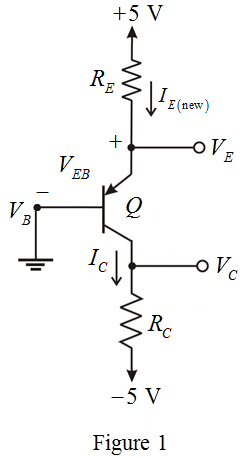

Determine the value of emitter-base voltage.
Substitute for  ,
,  for
for  ,
,  for
for  and
and  for in the equation.
for in the equation.
Thus, the value of emitter-base voltage, is .
Refer to Figure P6.32 in the text book.
The modified circuit diagram is shown in Figure 1.

Determine the value of emitter-base voltage.
Substitute for , for , for and for in the equation.
Thus, the value of emitter-base voltage, is .
Determine the value of emitter resistance.
Substitute for and  for in the equation.
for in the equation.

Thus, the value of emitter resistance,  is
is
Determine the value of collector current.

Substitute  for
for  and
and  for in the equation.
for in the equation.
Thus, the value of collector current,  is .
is .
Determine the value of collector resistance.
Substitute for  and
and  for
for  in the equation.
in the equation.
Thus, the value of collector resistance can be increased while the collector current remains unchanged, is.